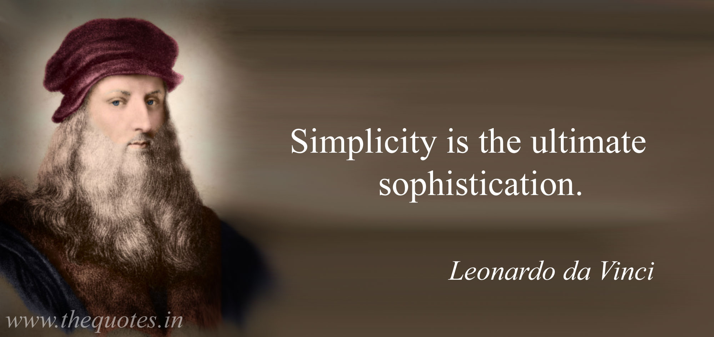

<link rel="import" href="../bower_components/polymer/polymer-element.html">
<link rel="import" href="../bower_components/paper-input/paper-input.html">
<link rel="import" href="../bower_components/paper-icon-button/paper-icon-button.html">


<link rel="import" href="../bower_components/iron-demo-helpers/demo-pages-shared-styles.html">
<link rel="import" href="../bower_components/iron-demo-helpers/demo-snippet.html">
<link rel="import" href="../bower_components/iron-icon/iron-icon.html">
<link rel="import" href="../bower_components/iron-icons/iron-icons.html">

<link rel="import" href="../bower_components/separation-concern/separation-concern.html">
<link rel="import" href="shared-styles.html">

<link rel="import" href="../bower_components/separation-concern/separation-concern.html">
<link rel="import" href="ual-ptc/ual-ptc.html">
<link rel="import" href="ual-ptc-list/ual-ptc-list.html">
<link rel="import" href="../bower_components/ten-commandments/ten-commandments.html">


<dom-module id="my-view6"><!--Separation of concern-->
  <template>
    <style include="shared-styles">
      :host {
        display: block;
        padding: 10px;
        margin-left: 70px;
      }
      code{
        background-color: yellow;
      }
    </style>

    <h1>Components used in this documentation</h1>
    
    <sup>Simplicity is the ultimate sophistication</sup>

    <h3><code>&ltual-ptc&gt</code></h3>
    <ual-ptc></ual-ptc>

    <h3><code>&ltual-ptc-list&gt</code></h3>
    <ual-ptc-list></ual-ptc-list>

    <h3><code>&ltseparation-concern&gt</code></h3>
    <separation-concern></separation-concern>

    <h3><code>&ltten-commandments&gt</code></h3>
    <ten-commandments></ten-commandments>


  </template>

  <script>
      class MyView6 extends Polymer.Element {
          static get is() { return 'my-view6'; }
      }

      window.customElements.define(MyView6.is, MyView6);
  </script>
</dom-module>
